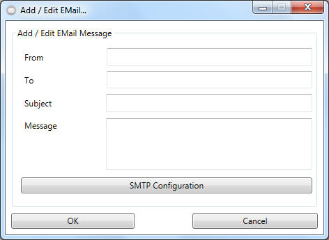
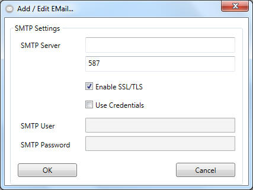

Creating Responses - New E-Mail

- Please provide a sender in the "From" box using the format
user@emailserver.domain
- Continue to add one or more reciepents. You could add more than one by
seperating them with a semicolon.
- Choose a subject.
- Specify the message that should be send to all reciepents. You could
make use of placeholders that will be replaced in the following manner:
You could use the following placeholders:
'$lockname' = will be replaced by the name of the lock on which the event
has been arised
'$lockphi' = ... by the serialnumber (phi) of the lock ...
'$transpondername' = ... by the name of the transponder owner ...
'$transponderphi' = ... and its phi ...
'$datetime' = ... by the time, the event has been received from the
EventMessenger
'$accessresult' ... by the result of the particular event (e.g. access
granted)
If you leave this blank, a default Message weill be send in english.
BE AWARE: Availability of placeholders is bound to the event type. A
doormonitoring event for example doesnt know anything about the transponder
owner. With that said, $transpondername and $transponderphi will be replaced
with "$dontcare" if used in an doormonitoring event.
- Please click on "SMTP Settings" to setup the mailserver you would like
to use to send the email messages.

HINT: Adding emails without a
valid smtp server configuration is not allowed.
- Add the smtp servername with respect of the following format:
'servername.domain'
- Specify a smtp server port to use.
- If the Server needs or allows SSL / TLS please check the correspondig
box.
- Check the "Use Credentials" checkbox if authentication is mandatory.
- Apply the smtp server settings to your message by clicking "OK".
- Click on "OK" in your email message dialog to finish the message setup.